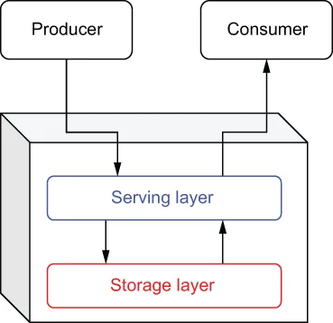

Before I jump into specific messaging systems, I wanted to present a simplified representation of a messaging system in order to highlight the underlying components that all messaging systems have. Identifying these core features will provide a basis for comparison between messaging systems over time.
在深入介绍具体的消息系统之前，我想先给出一个消息系统的简化表示，以此凸显所有消息系统都具备的底层组件。识别出这些核心特性，将为后续横向比较不同时期的消息系统提供依据。
As you can see in figure 1.5, every messaging system consists of two primary layers, each with its own specific responsibilities that we will explore next. We will examine the evolution of messaging systems across each of these layers in order to properly categorize and compare different messaging systems, including Apache Pulsar.
如图 1.5 所示，每个消息系统都由两个主要层次构成，每一层都有各自明确的职责，我们接下来会逐一探讨。我们将沿着这两个层次考察消息系统的演进，从而对包括 Apache Pulsar 在内的不同消息系统进行恰当的分类与比较。

\Figure 1.5 Every messaging system can be separated into two distinct architectural layers.
图 1.5 每个消息系统都可以拆分为两个界限分明的架构层。
Serving layer
服务层
The serving layer is a conceptual layer within an EMS that interacts directly with the message producers and consumers. Its primary purpose is to accept incoming messages and route them to one or more destinations. Therefore, it communicates via one or more of the supported messaging protocols, such as DDS, AMQP, or MSMQ. Consequently, this layer is heavily dependent on network bandwidth for communication and CPU for message protocol translation.
服务层是 EMS 中的一个概念层，直接与消息生产者和消费者交互。它的主要职责是接收传入的消息，并将其路由到一个或多个目的地。因此，它通过一种或多种受支持的消息协议进行通信，例如 DDS、AMQP 或 MSMQ。因此，这一层在通信上高度依赖网络带宽，在消息协议转换上高度依赖 CPU。
Storage layer
存储层
The storage layer is the conceptual layer within an EMS that is responsible for the persistence and retrieval of the messages. It interacts directly with the serving layer to provide the requested messages and is responsible for retaining the proper order of the messages. Consequently, this layer is heavily dependent on the disk for message storage.
存储层是 EMS 中负责消息持久化与检索的概念层。它直接与服务层交互，以提供所请求的消息，并负责维护消息的正确顺序。因此，这一层在消息存储上高度依赖磁盘。